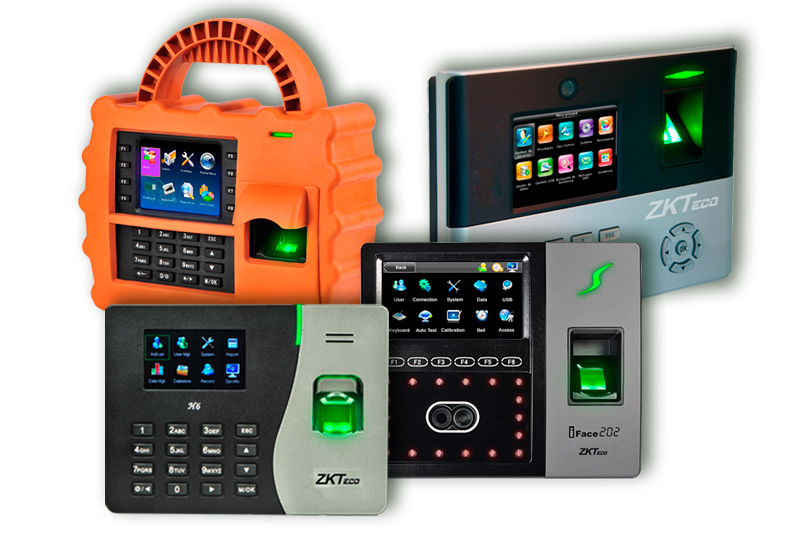
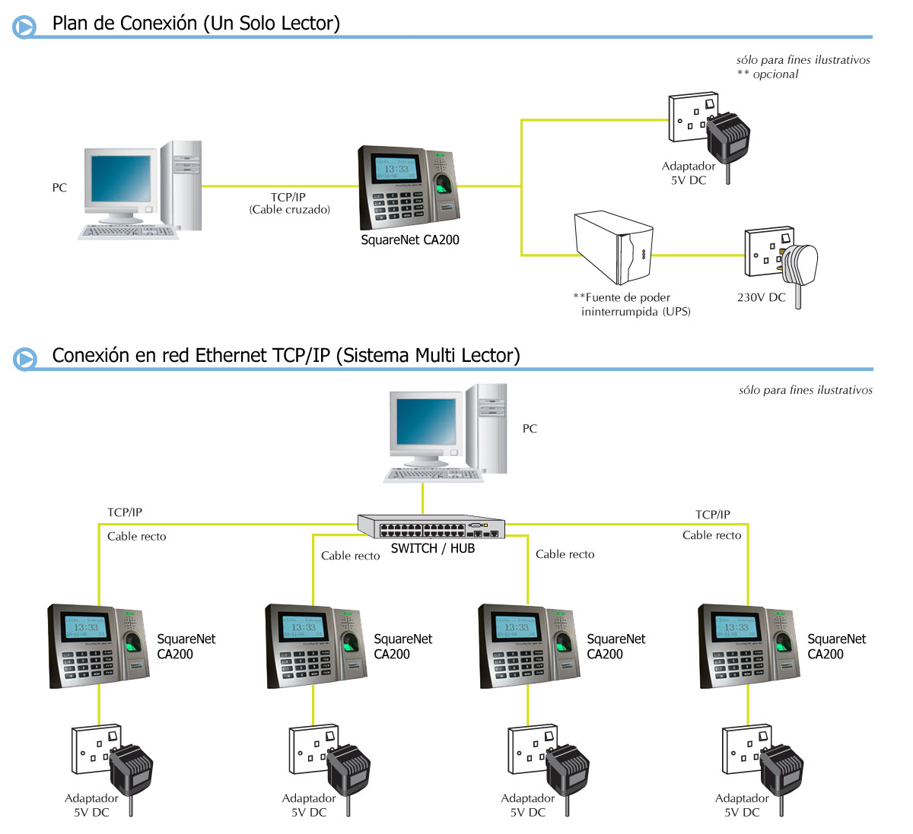

Una de las marcas más reconocidas en el mercado de dispositivos biométricos es ZK Teco, anteriormente conocida como ZK Software. Desde 1998 se ha dedicado a desarrollar soluciones de sistemas de control de asistencia, accesos y producción, tanto en terminales de marcación como en software de gestión de tiempos y fabricación. Cuentan con una gran cantidad de modelos para Control de Acceso y Asistencia que trabajan con huella digital, reconocimiento facial, tarjetas RFID, biometría de las venas, etc., o incluso multibiométricos que combinan varias tecnologías al mismo tiempo brindando la máxima flexibilidad.
SquareNet no distribuye hardware o equipos, pero cuenta con completa compatibilidad para todos los modelos ZK Teco e incluso puede descargar automáticamente los datos usando el software SquareBridge.
Para más información o para encontrar estos productos, puede seguir uno de los siguientes enlaces:
